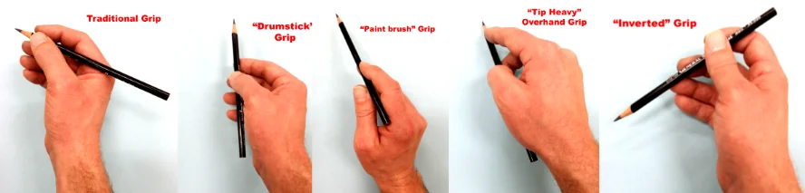

🏠
Five pencil grips for drawing
繪畫的五種鉛筆握法
by Matt Fussell
Matt Fussell
Why change how you hold the pencil?
為什麼要換握法？
-
✏️ The grip changes the marks you make; using one grip for everything limits your
mark-making.
✏️ 握法會改變線條與筆觸；只用一種握法會限制表現方式。
-
✨ Variety (a principle of art) keeps drawings interesting; different
grips add variety quickly.
✨ 多樣性（藝術原則之一）讓畫面更有趣味；換握法能很快增加筆觸變化。
-
🚀 Trying new holds expands how you can move the pencil and what kinds of lines you can
produce.
🚀 多試幾種握法，能擴大運筆方式與線條的可能性。

One row of photos: traditional, drumstick, paint brush, tip-heavy overhand, and inverted
pencil grips.
一列照片：傳統、鼓槌式、畫筆式、前重反手式、反向式，五種握法。
1. Traditional grip
1. 傳統握法（寫字式）
-
✍️ Same hold most people learn for writing; often the only grip used for drawing.
✍️ 多數人學寫字時的握法；不少人畫畫也只會用這一種。
-
🫶 Natural “first choice” when you start a drawing.
🫶 開始畫時往往最順手、最先想到。
-
🔍 The tip touches the paper; strong control — good for detail.
🔍 以筆尖接觸紙面，控制力高，適合細節。
-
🧱 Relying on it alone limits what you can do with line and tone.
🧱 若只用這種握法，線條與明暗的變化會受限。
2. Drumstick grip Author’s favourite
2. 鼓槌式握法 作者最推薦
-
🥁 Pencil rests loosely between thumb and index finger; other fingers
steady it (similar to holding a drumstick).
🥁 鉛筆鬆鬆地夾在拇指與食指之間，其餘手指輔助穩定（像握鼓槌）。
-
📐 Marks can come from the side of the graphite, not only the point.
📐 筆觸可來自筆芯的側面，不只靠尖端。
-
💪 Encourages drawing from the shoulder, not just the wrist — helps you
loosen up and often improves drawing.
💪 較容易用肩與手臂帶動，而不只動手腕；有助放鬆，畫面常更好。
-
🖼️ Great for loose marks, laying out a picture, and drawing large; very
wide range of marks.
🖼️ 適合鬆動的線、起稿構圖、大幅畫面；筆觸變化幅度大。
3. Paint brush grip
3. 畫筆式握法
-
🖌️ Hold the pencil more like a paint brush, fairly upright.
🖌️ 像握畫筆一樣，筆身較直立。
-
🤲 The back of the pencil rests on the crease between the index finger and the base of
the thumb.
🤲 筆桿後端靠在食指與虎口之間的凹位。
-
🌸 Suited to light, delicate marks, checking proportions on the page, and
planning composition.
🌸 適合輕、細的線條、在畫面上比較比例，以及構圖起稿。
-
✏️ Usually the tip still contacts the paper.
✏️ 一般仍以筆尖接觸紙面。
4. Tip-heavy overhand grip
4. 前重／反手加壓式握法
-
💥 For forceful marks: middle of the pencil between
middle finger and thumb, pressure into the tip.
💥 需要用力時：以中指與拇指夾住筆桿中段，並向筆尖施壓。
-
📏 Pencil lies almost parallel to the paper; the side of the tip
meets the surface.
📏 筆身幾乎貼近、平行於紙面；以筆尖側邊磨擦著紙。
-
⚡ Produces strong marks with possible width variation; good for covering
big areas quickly.
⚡ 線條較有力，寬窄可變；適合快速塗滿大面積。
-
🏋️ Also brings the shoulder into the movement.
🏋️ 同樣會動用到肩與手臂。
5. Inverted grip
5. 反向握法
-
☝️ Pencil on the forefinger, steadied by thumb and lower fingers.
☝️ 鉛筆擱在食指上，拇指與下方手指穩住筆桿。
-
↩️ The pencil points back toward you (not toward the bottom of the
page).
↩️ 筆尖方向朝向自己（與一般寫字方向相反）。
-
🔄 You can mark with the tip and the back of the tip area.
🔄 可用筆尖及筆尖靠後的一側來畫。
-
👀 Hand and fingers stay out of the way so you can see the marks as you
make them.
👀 手不擋視線，畫的時候能清楚看見筆觸。